Замена сцепленияПри замене ведомого диска сцепления желательно заменить и нажимной диск (корзину), даже если на его рабочей поверхности нет заметных следов износа. Дело в том, что в процессе эксплуатации изнашивается его рабочая поверхность и ослабевает жесткость диафрагменной пружины. Также необходимо заменить выжимной подшипник, если он имеет люфт, при вращении заедает или издает хорошо слышимый шум . Для выполнения работы потребуется оправка для центрирования ведомого диска сцепления. Снятие 1. Снимаем коробку передач Если замена нажимного диска в сборе (корзины) не планируется, кернером помечаем его положение на маховике. 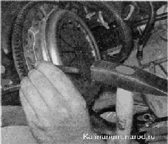2. Торцовым или накидным ключом на 8 мм отворачиваем шесть болтов крепления корзины к маховику, удерживая маховик от проворачивания монтажной лопаткой или большой шлицевой отверткой. 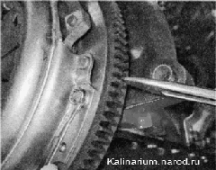3. Снимаем корзину и ведомый диск. 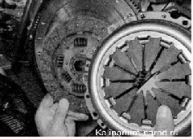 4. Поддев шлицевой отверткой концы пружины, снимаем их с выступов муфты выжимного подшипника. 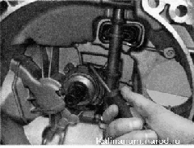 5. Снимаем с направляющей втулки выжимной подшипник в сборе с муфтой. 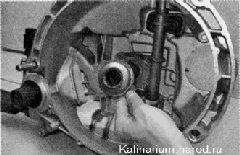 6. Снимаем пружину. 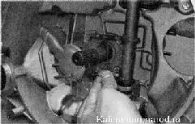7. Для замены вилки и ее втулки, поддев отверткой, снимаем резиновый защитный чехол вилки выключения сцепления. 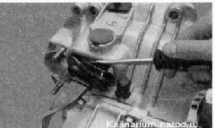 8. Вынимаем из отверстия картера пластмассовую втулку вилки. 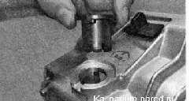
9. Сместив вверх, выводим из посадочного места нижний конец оси рычага вилки и снимаем вилку выключения сцепления. 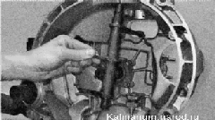 Промываем снятые детали в керосине. Поврежденные и изношенные детали заменяем. Установка 1. Очищаем от грязи и старой смазки шлицевую часть первичного вала коробки передач и направляющую втулку выжимного подшипника. 2. Наносим на них и на рабочую поверхность оси вилки выключения сцепления тонкий слой смазки ШРУС-4. 3. Устанавливаем в картер сцепления детали привода (вилку, пружину, выжимной подшипник) в последовательности, обратной снятию. Наносим на рабочую поверхность вилки пластичную смазку. 4. Вставляем центрирующую оправку в отверстие торца коленчатого вала. 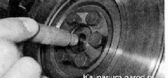 5. Устанавливаем на оправку ведомый диск сцепления, ориентируя его так, чтобы та сторона, где ступица диска выступает больше, была обращена к коробке передач. 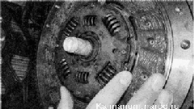6. Устанавливаем корзину. 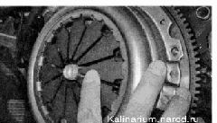7. Совместив ранее сделанные метки, торцовым ключом на 8 мм равномерно заворачиваем болты крепления корзины. Окончательно затягиваем болты моментом 19,1-30,9 Н-м (2,0-3,2 кгс-м). 8. Удаляем центрирующую оправку. 9. Устанавливаем коробку передач в последовательности, обратной снятию. 10. Проверяем работу привода выключения сцепления и регулируем длину троса. |